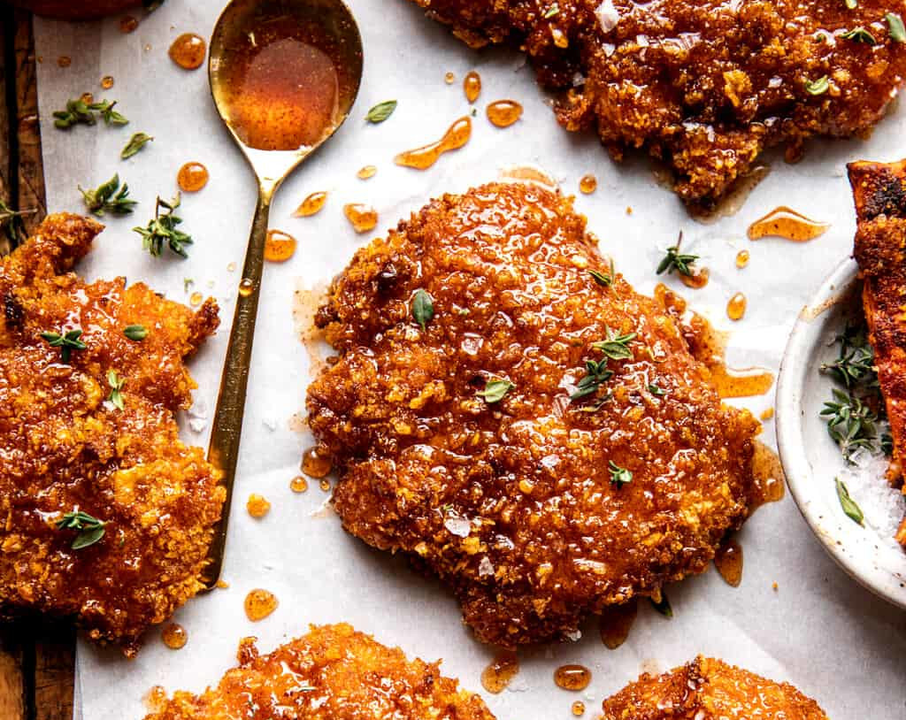

Crunchy Hot Honey Chicken
This Baked Crunchy Hot Honey Chicken delivers the perfect balance of crispy, spicy, and sweet—all without deep frying. Juicy chicken is coated in a golden, crunchy crust and baked to perfection, then drizzled with a rich hot honey glaze that adds a fiery kick with a touch of sweetness. The combination of spices and textures makes this dish irresistibly moreish, ideal for weeknight dinners or a crowd-pleasing treat. Serve it with your favourite sides for a flavour-packed meal that’s both indulgent and easy to make.
Ingredients
For the chicken:
- 6 cups cornflakes (use gluten free, if needed)
- ¼ cup grated parmesan cheese
- 1 teaspoon smoked paprika
- ½ teaspoon onion powder
- ½ teaspoon garlic powder
- 2 large eggs, beaten
- 2 tablespoons hot sauce
- 2 pounds chicken breast tenderloins
- extra virgin olive oil, for drizzling
For the hot honey:
- ½ cup honey
- 2-3 tablespoons hot sauce
- 1-3 teaspoons cayenne pepper
- ¾ teaspoon chipotle chili powder
- ½ teaspoon garlic powder
- ½ teaspoon onion powder
- sea salt
- fresh thyme, cilantro, or parsley, for serving
Instructions
- Preheat the oven to 425° F. Line a baking sheet with parchment paper.
- In a food processor, combine the cornflakes, parmesan, paprika, onion powder, garlic powder, and a pinch of salt. Pulse until you have fine crumbs. Alternatively, you can crush the crumbs in a ziplock bag by stepping on them. Dump the crumbs into a shallow bowl.
- Beat the eggs in a bowl, add the hot sauce and chicken, and toss well to coat.
- Dredge the chicken through the crumbs, covering fully. Place on the prepared baking sheet. For a thicker coating, dip the chicken back through the eggs, then through the crumbs a 2nd time. Place on the prepared baking sheet. Drizzle with olive oil. Bake for 20-25 minutes, until crisp all around.
- Just before the chicken is done cooking, make the sauce. In a sauce pot, warm together the honey, hot sauce, cayenne, chili powder, onion powder, and garlic powder, plus a pinch of salt.
- Drizzle the warm sauce over the chicken. Top with herbs. If the sauce thickens, warm for 5 seconds in the microwave.